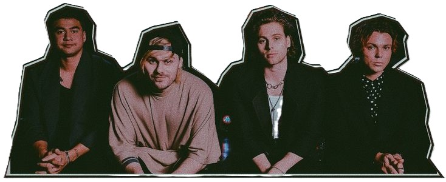

Desde su formación en 2011, 5 Seconds of Summer (5SOS) ha experimentado un crecimiento vertiginoso que los ha llevado a ser una de las bandas más importantes y reconocidas a nivel mundial. A lo largo de su carrera, han cosechado una impresionante lista de logros, tanto en la música como en la cultura pop, convirtiéndose en un referente para una generación de fans leales y apasionados. Desde su debut, 5SOS fue reconocida por su estilo fresco y su capacidad de combinar elementos del pop-punk con sonidos modernos, lo que les permitió conquistar tanto a fanáticos del pop como a aquellos que disfrutan de géneros más alternativos.

5 SECONDS OF SUMMER
El Reconocimiento de 5 Seconds of Summer: Una Carrera Imparable
En cuanto a premios, 5SOS ha sido galardonada con múltiples reconocimientos, entre los que destacan los American Music Awards, MTV Europe Music Awards, y Billboard Music Awards. La banda ha sido aclamada por su talento y por la energía que transmiten en sus actuaciones en vivo, siendo una de las favoritas en ceremonias de premiación y festivales de música. 5SOS también ha tenido un reconocimiento crítico impresionante.
La banda ha demostrado un impacto significativo en las redes sociales, donde su conexión con los fans ha sido clave para su éxito. Con millones de seguidores en plataformas como Instagram, Twitter y YouTube, 5SOS ha logrado crear una comunidad global que sigue su evolución tanto musical como personal. Esta base de seguidores ha sido fundamental para la trayectoria de la banda, dándoles una conexión directa con sus fans en todo el mundo. Además de su éxito en la música, los integrantes de 5SOS han logrado posicionarse como figuras influyentes en la cultura pop.
El reconocimiento de 5SOS no solo se limita a sus logros comerciales y de popularidad, sino también a su increible habilidad para crear música que resuena con millones de personas. Desde canciones que exploran la juventud, el amor y la ansiedad, hasta baladas que transmiten emociones profundas, 5SOS ha logrado conectar con su audiencia de manera única. A medida que continúan su carrera, 5 Seconds of Summer sigue demostrando que son una banda que va más allá de ser una simple moda del momento. Con cada nuevo paso, refuerzan su lugar en la historia de la música, y su reconocimiento sigue creciendo, consolidándose como una de las bandas más influyentes y queridas de la última década.
